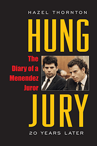

<body bgcolor="#FFFFFF" text="#000000" link="#0000FF" vlink="#CC0000" alink="#CC0000"><center><hr width="350" size="1" align="center" noshade>A reissued edition of a riveting account of serving on the jury of a high-profile murder trial<hr width="350" size="1" align="center" noshade><p><a href="https://cdcshoppingcart.uchicago.edu/Cart/ChicagoBook.aspx?ISBN=&&PRESS=temple" target="_top">Buy this book!</a> | <a href="https://cdcshoppingcart.uchicago.edu/Cart/Cart.aspx?PRESS=temple" target="_top">View Cart</a> | <a href="https://cdcshoppingcart.uchicago.edu/Cart/Cart.aspx?PRESS=temple" target="_top">Check Out</a></p><p></p></center><!--none//--><h1 class = "booktitle">Hung Jury</h1> <h1 class = "subtitle">The Diary of a Menendez Juror</h1>
<h3>Hazel Thornton</h3>
paper: $22.95, <BR>EAN:&nbsp;978-1-4399-1513-4<BR><font color=#990033>Available</FONT><font size=-7><br>&nbsp;</font></p><p class="info"><p class="info"></p></td></tr></table>
<BR> <p class="info">206 pp<BR> 5.5 x 8.25<BR> <p class="info"><font size=-7>&nbsp;</font></p><p class="info">
</P><BLOCKQUOTE><p>
"<i>A juror refutes some common misperceptions about the hopelessly deadlocked juries in the Menendez case… [Thornton] reveals in her&nbsp;lively, astute trial diary that Erik's jury reached an impasse not on the issue of guilt, but on the charge…. Countering the notion that the jurors were hoodwinked and baffled by the parade of psychological experts, Thornton shows a firm grasp of the facts and of legal concepts like ‘burden of proof.'… A highly valuable resource for litigators, and a good read for the expanding army of trial buffs</i>."-<b><i>Kirkus Reviews</i></b>
<br></BLOCKQUOTE>
<p>
More than two decades after serving as a juror on the high-profile seven-month murder trial <i>People v. Erik Galen Menendez, </i>Hazel Thornton updates her book <i>Hung Jury </i>with a new preface and a postscript essay of observations about the Menendez brothers' second trial.<br>
<p><i>Includes psychological commentary by Lawrence S. Wrightsman and Amy J. Posey, and legal commentary by Alan Scheflin.</i>
<br>
<P CLASS="top"><A HREF="#top">BACK TO TOP</A></P>&nbsp;
<BR>&nbsp;
<h2 class="inpageheading"><A NAME="reviews"></a>Reviews</h2>
<p>
"I<i>n many cases, the public cannot understand how the jurors decided as they did. Thornton spent seven months as a juror on the high-profile trial of Eric Menendez…. Her book illustrates both the day-to-day life of a juror and also the difficulties that jurors have in coming to agreement on a verdict and penalty…. An interesting addition to true-crime collections, especially with today's overwrought fascination with juries</i>."-<b><i>Library Journal</i></b>
<br>
<p>
<i>"Hazel Thornton shares her experiences serving on one of the juries of one of the most high-profile murder trials in recent history…. [She] began keeping a journal as an outlet for her feelings about the case and to help her sort out the deluge of information that she received in court every day. Her candid entries provide readers with an insider's perspective of a controversial trial and show how the defense attorneys successfully used a ‘blame the victim' strategy, which caused hopeless deadlock among the juries for both defendants. The diary reveals much about the thoughts, discussions, and actions of the jury</i>."-<b><i>Booklist</i></b>
<br>
<P CLASS="top"><A HREF="#top">BACK TO TOP</A></P>&nbsp;<P>
</P><BR>&nbsp;
<H2 class="inpageheading"><A NAME="author bio"></a>About the Author(s)</H2><p>
<b>Hazel Thornton</b>&nbsp;was a telecommunications engineer in Pasadena, California, at the time of the first trial. She is now a professional organizer living in Albuquerque, New Mexico and author of&nbsp;<i>Go with the Flow! The Clutter-Clearing Tool Kit for an Organized Life.&nbsp;</i>Visit her online at<i>&nbsp;</i>www.org4life.com.
<br>
<P CLASS="top"><A HREF="#top">BACK TO TOP</A></P>
<p><h2 class="inpageheading"><A NAME="subjects"></a>Subject Categories</h2><P><A HREF="/tempress/general.html" TARGET="_top">General Interest</a><BR><P><A HREF="/tempress/law.html" TARGET="_top">Law and Criminology</a><BR><P><A HREF="/tempress/psycho.html" TARGET="_top">Psychology</a></P></P>
</p>
<P>
</P>
<p align="center"><a href="https://cdcshoppingcart.uchicago.edu/Cart/ChicagoBook.aspx?ISBN=&&PRESS=temple" target="_top">Buy this book!</a> | <a href="https://cdcshoppingcart.uchicago.edu/Cart/Cart.aspx?PRESS=temple" target="_top">View Cart</a> | <a href="https://cdcshoppingcart.uchicago.edu/Cart/Cart.aspx?PRESS=temple" target="_top">Check Out</a></p><p><font face="Arial" size="1"><a href="copyright.html" onMouseOver="window.status='Web Copyright Policy';return true;" onMouseOut="window.status=''" title="Web Copyright Policy">&copy;</a> 1995 <a href="http://www.temple.edu" target="new" onMouseOver="window.status='Link to Temple University home page';return true;" onMouseOut="window.status=''" title="Link to Temple University home page">Temple University</a>. All Rights Reserved. http://www.temple.edu/tempress/titles/1256_reg.html</font></p>